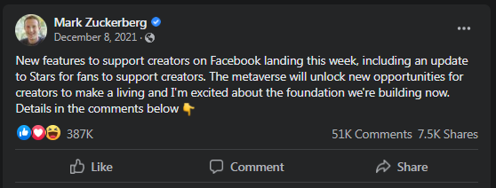
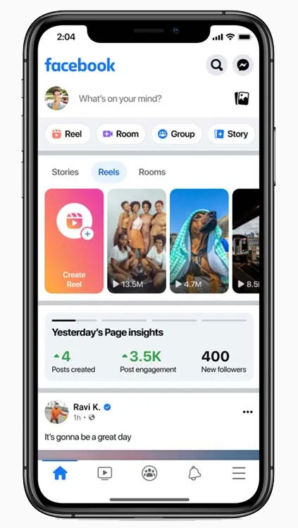

Meta සමාගම විසින් සුදුසුකම් ලත් Creators ලාට Facebook Page එකක් සෑදීමෙන් තොරව Facebook profile සඳහා මුදල් ඉපැයිය හැකි Professional Mode එකක් හඳුන්වාදී තිබෙනවා.
Meta ආයතනය විසින් Creators ලාට ඩොලර් බිලියනයක පමණ ආයෝජනයක් සිදුකර ඇති බවට Mark Zuckerberg විසින් පසුගියදා Facebook සටහනක් මඟින් ප්රකාශයට පත් කළා.

Facebook Profile සඳහා වන මෙම Professional mode එකෙහි ඇති නව පහසුකම්
Facebook Page එකක Posts වලට හා අනෙකුත් Content වල Insights බැලීමට හැකි බව ඔබ දන්නවා ඇති, මේ පහසුකමද මේ Professional Mode එක සක්රීය කිරීමෙන් අනතුරුව ඔබට ලැබෙනු ඇත.

මෙහි පළමු මුදල් ඉපැයීමේ විකල්පයන්ගෙන් එකක් වනුයේ Reels Play bounes වැඩසටහන වනවා. එහිදී සුදුසුකම් ලත් Creatos ලාට ඔවුන්ගේ සුදුසුකම් ලබන Content වල Views සංඛ්යාව මත මසකට $35,000 දක්වා ඉපැයීමට ඉඩ සලසා තිබෙනවා. මෙය ආරම්භ කිරීම සඳහා උනන්දුවක් දක්වන Creators ලාට ලියාපදිංචි විය හැකි අතර මේ සඳහා අවශ්ය Reels සෑදීම සඳහා ඉගෙන ගැනීමට අවශ්ය දැනුමද ලබා දෙනවා. මෙයත් සමඟ ලබන වසරේ තවත් රටවල් වලට Facebook Reels ව්යාප්ත කිරීමටද සැලසුම් කර තිබෙනවා.
ඔබගේ Profile එකේ මේ Mode එක සක්රීය කළ පසු ඔබගේ Profile එක ඕනෑම කෙනෙකුට Follow කර ගත හැකි වනවා. ඔවුන්ට ඔබේ Posts ඔවුන්ගේ feed දැකිය හැකිවනවා. කෙසේ නමුත් ඔබට ඔබගේ Posts ඔබගේ මිතුරන් සඳහා පමණක් ද නැත්නම් එය Public ද යන්න ඔබට තේරිය හැකිවනවා.
මේ නව Mode එක ඇමෙරිකාවේ සීමිත පරිශීලකයින් සමඟ පරීක්ෂා කරන අතර එයින් ලැබෙන ප්රතිඵල මත ඉදිරියේදී තවත් වෙනස්කම් හා දෝෂ නිවැරදි කිරීම් සිදු කරන බවට Meta ආයතනය ප්රකාශ කොට තිබෙනවා.
මෙය අද වන විට Meta සමාගම විසින් අනෙකුත් රටවල් වෙත ද ව්යාප්ත කර අැති බවට නිවේදනය කර තිබෙනවා. එයට ලංකාවද අැතුලත් ෙව්.